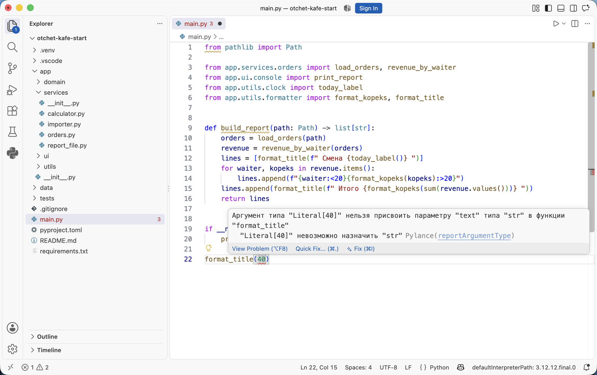
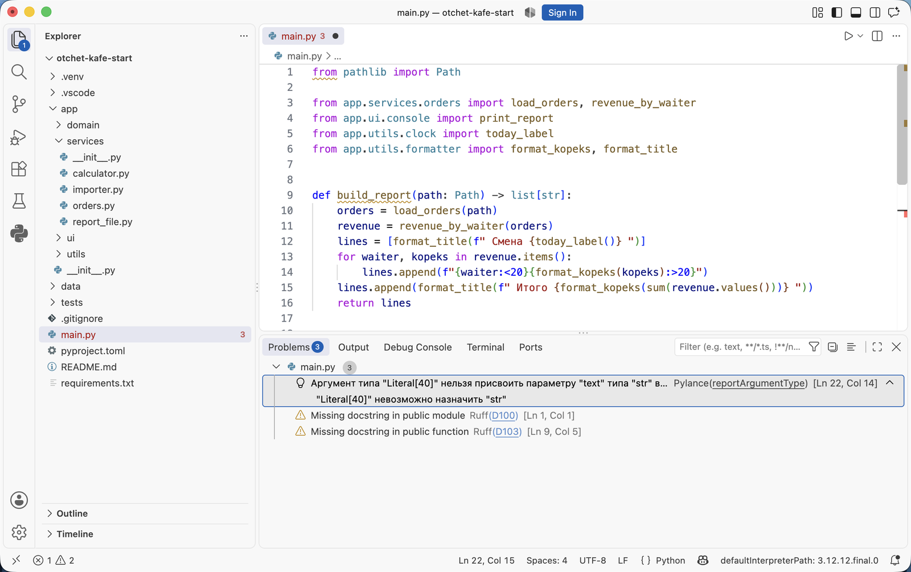
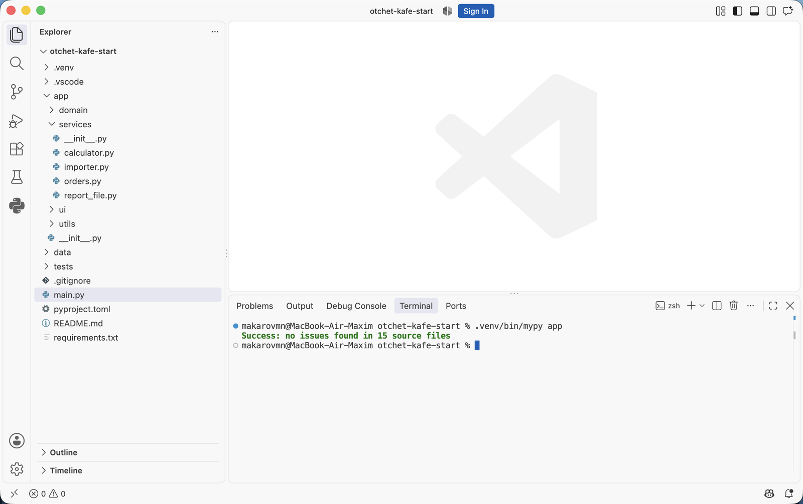
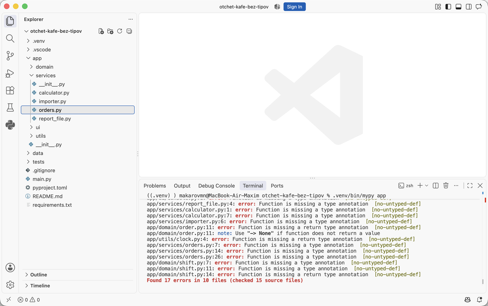

Аннотации типов и документация кода · МДК.01.01 · разработка программных модулей
Глава 4.3
Проверка типов:
редактор и mypy
В этой главе аннотации начинают проверяться. Разобраны две программы: Pylance, которая подчёркивает ошибки в VS Code во время набора, и mypy, которая проверяет весь проект командой в терминале. Показано, как их включить и настроить, как читать строку вывода, что означают частые коды ошибок, где проверка бессильна и как запустить её в проверках запроса на слияние.
- Категория
- Инструменты
- Уровень
- Начальный
- Опирается на
- Главы 4.1 и 4.2
- Зачем это знать
- Находить неверные вызовы до запуска программы
§1Две программы проверки
Проверка типов — чтение кода программой, которая сверяет каждый вызов, присваивание и возврат с аннотациями, не запуская сам код. В курсе используются две такие программы. Работают они по одним правилам, а различаются местом и моментом запуска.
| Программа | Где работает | Когда | Что проверяет |
|---|---|---|---|
| Pylance | Внутри VS Code, ставится вместе с расширением Python | Во время набора, при каждом изменении | Открытые файлы |
| mypy | В терминале, ставится через pip | По команде, перед коммитом и в проверках запроса на слияние | Весь проект или указанная папка |
Pylance показывает ошибку там, где её сделали, пока файл открыт. mypy проверяет и те файлы, которые сейчас никто не открывал, и выдаёт единый отчёт, поэтому на стороне репозитория запускают его.
§2Проверка в редакторе
По умолчанию Pylance использует аннотации для подсказок, но ошибки типов не подчёркивает. Проверку включают параметром python.analysis.typeCheckingMode в настройках проекта:
{
"python.analysis.typeCheckingMode": "basic"
}
| Значение | Что проверяется |
|---|---|
off | Ошибки типов не показываются, аннотации идут только в подсказки |
basic | Неверные аргументы, присваивания, возвраты, обращения к None — режим курса |
standard | То же и несколько дополнительных правил |
strict | Всё, включая функции без аннотаций; на учебном проекте даёт много замечаний сразу |
После включения неверный вызов подчёркивается красной волнистой линией. Наведите на неё указатель — появится сообщение с тем же смыслом, что у mypy.

main.py дописан вызов format_title(40). Число подчёркнуто, сообщение: «Аргумент типа "Literal[40]" нельзя присвоить параметру "text" типа "str" в функции "format_title"». Literal[40] — так Pylance называет тип конкретного числа 40. В конце строки — источник и правило: Pylance(reportArgumentType). Программа при этом не запускалась.Все такие сообщения собираются в панели Problems — её открывает сочетание CtrlCmd + Shift + M. У каждой строки указан источник — программа, которая сделала замечание.

reportArgumentType и местом [Ln 22, Col 14]. Ниже два замечания Ruff — про отсутствие докстрингов: во втором архиве их ещё нет. Замечания разных программ собираются в одной панели. Щелчок по строке переводит курсор к месту ошибки.§3mypy: запуск
mypy — программа проверки типов для Python, которая запускается из терминала. В проекте она перечислена в requirements.txt и ставится вместе с остальными зависимостями. Запуск на пакете app:
$ .venv/bin/mypy app
mypy проходит по всем файлам пакета, сверяет вызовы с аннотациями и печатает найденное. Если ошибок нет, вывод из одной строки:

Success: no issues found in 15 source files — проверено пятнадцать файлов пакета, несовпадений с аннотациями нет.§4Как читать строку вывода
Каждая ошибка занимает одну строку одинакового строения. Строка из главы 4.1, где в calculate_average передали строки:
error — ошибка, note — пояснение, например ответ на reveal_type. Сообщение называет, какой тип пришёл и какой ожидался. Код в квадратных скобках — имя правила: по нему ошибку находят в документации mypy.Последняя строка отчёта подводит итог: Found 4 errors in 1 file (checked 1 source file) — сколько ошибок, в скольких файлах и сколько файлов проверено.
§5Функции без аннотаций
По умолчанию mypy пропускает функции, у которых нет ни одной аннотации: их тела он не проверяет и об их отсутствии не сообщает. Проект без аннотаций проходит проверку чисто, хотя сверять в нём нечего:
$ .venv/bin/mypy app --config-file /tmp/empty.ini Success: no issues found in 15 source files
Ключ --config-file с пустым файлом здесь нужен только для опыта: с ним mypy не читает настройки проекта. Ответ Success при этом ничего не гарантирует — ни одна функция не проверена.
Чтобы mypy находил такие функции, в pyproject.toml включают параметр disallow_untyped_defs. В проекте темы он уже включён:
[tool.mypy] # Функция без аннотаций — ошибка: так проверка находит места, # где типы забыли указать. disallow_untyped_defs = true
На первом архиве, где аннотаций нет, тот же запуск выдаёт перечень всех функций, которые предстоит аннотировать:

Function is missing a type annotation, код no-untyped-def. У функций без параметров сообщение короче — missing a return type annotation: не хватает только типа результата. Итог: Found 17 errors in 10 files.Этот перечень — план работы для практики в главе 4.4: когда все семнадцать функций получат аннотации, вывод сменится на Success.
§6Частые коды ошибок
Все примеры в таблице получены запуском mypy на файлах из глав 4.1 и 4.2.
| Код | Что не так | Пример |
|---|---|---|
arg-type | Аргумент не того типа | format_title(40) — передано число вместо строки |
list-item | Элемент списка не того типа | calculate_average(["5", "4"]) |
assignment | Переменной присвоено значение не того типа | total: int = revenue_by_waiter(...) — пришёл словарь |
return-value | Функция возвращает не тот тип, что в аннотации | -> str, а возвращается kopeks / 100 |
union-attr | Обращение к полю значения, которое может быть None | found.kopeks без проверки на None |
func-returns-value | Используется результат функции с -> None | result = print_report(...) |
no-untyped-def | У функции нет аннотаций | любая функция первого архива |
# def format_kopeks(kopeks: int) -> str: # return kopeks / 100 proba.py:2: error: Incompatible return value type (got "float", expected "str") [return-value]
Сообщение got "float", expected "str" читается как «пришло дробное число, ожидалась строка». Такая форма — «пришло / ожидалось» — общая почти для всех кодов из таблицы.
§7Где проверка бессильна
Проверка работает с текстом программы; данные, которые появятся при запуске, ей недоступны. В load_orders сумма читается из файла смены вызовом int(row["kopeks"]). Для проверки всё верно: int(...) возвращает целое. Если же в файле окажется строка сто, программа завершится ошибкой ValueError, и проверка об этом не предупредит.
| Находит проверка типов | Не находит проверка типов |
|---|---|
| Вызов с аргументом не того типа | Неверные данные в файле или в ответе сервера |
Обращение к полю значения, которое может быть None | Ошибку в расчёте: + вместо - между числами |
Использование результата функции -> None | Нарушение ограничений вроде «оценка от 2 до 5» |
| Возврат значения не того типа | Всё, что спрятано за Any |
Вторую колонку закрывают тесты и проверки внутри функций. Проверка типов работает вместе с ними: она находит один класс ошибок — несовпадение типов — сразу во всём проекте.
Когда замечание верно по форме, но в конкретном месте ошибкой не является, его подавляют комментарием # type: ignore с кодом правила в квадратных скобках:
format_title(40) # type: ignore[arg-type]
Success: no issues found in 1 source file
Код правила в скобках обязателен: без него подавляются все замечания на строке, в том числе те, что появятся позже. Каждое такое место объясняют на разборе запроса на слияние.
§8Проверка в запросе на слияние
Команда из терминала добавляется в проверки репозитория шагом рядом с Ruff и тестами:
- name: Проверка типов
run: mypy app
- name: Проверка кода и докстрингов
run: ruff check app
- name: Тесты
run: python -m pytest -q
Порядок шагов выбран по смыслу: сначала типы, затем оформление, затем поведение. Запрос на слияние с функцией без аннотаций или с неверным вызовом не пройдёт проверку до разбора работы.
§9Мини-практика: десять минут
- Откройте второй архив проекта в VS Code и добавьте в
.vscode/settings.jsonстроку"python.analysis.typeCheckingMode": "basic". - Выполните
.venv/bin/mypy app. Ожидаемый вывод —Success: no issues found in 15 source files. - В конец
main.pyдопишитеformat_title(40). Число подчеркнётся красным; наведите указатель и прочитайте сообщение. - Снова выполните
.venv/bin/mypy app main.py. Найдите в выводе номер строки и код ошибкиarg-type. - Замените
40на"Итог"и убедитесь, что подчёркивание пропало, а та же команда отвечаетSuccess. - Удалите добавленную строку.
§10Проверьте себя
Чем Pylance отличается от mypy?
Pylance работает внутри VS Code и проверяет открытые файлы во время набора. mypy запускается командой в терминале и проверяет весь пакет, в том числе закрытые файлы. Поэтому в проверках репозитория запускают mypy.
Что означает строка proba.py:4: error: … [list-item]?
В файле proba.py на строке 4 ошибка: элемент списка не того типа. list-item — код правила, по которому ошибку находят в документации.
Проект без единой аннотации проходит mypy app без ошибок. Почему и как это исправить?
По умолчанию mypy не проверяет функции без аннотаций. Параметр disallow_untyped_defs = true в разделе [tool.mypy] превращает каждую такую функцию в ошибку no-untyped-def.
Проверка типов прошла. Может ли программа завершиться ошибкой при запуске?
Может. Данные из файлов и сети проверке недоступны, расчёты и ограничения значений она не проверяет, а всё, что спрятано за Any, пропускает. Такие ошибки находят тесты и проверки внутри функций.
Зачем в # type: ignore[arg-type] указывать код правила?
Чтобы подавить только одно замечание. Без кода подавляются все замечания на строке, включая те, что появятся после будущих правок.
§11Шпаргалка по главе
"python.analysis.typeCheckingMode": "basic"
панель Problems
mypy app
Success: no issues found
файл:строка: error: сообщение [код]
[tool.mypy]
disallow_untyped_defs = true
arg-type assignment return-value
union-attr no-untyped-def
# type: ignore[код]
Итог главы
Проверка типов сверяет вызовы, присваивания и возвраты с аннотациями, не запуская программу. В редакторе её выполняет Pylance после включения режима basic: неверный вызов подчёркивается, сообщения собираются в панели Problems. В терминале её выполняет mypy командой mypy app; каждая строка его отчёта содержит файл, номер строки, сообщение «пришло / ожидалось» и код правила. Параметр disallow_untyped_defs превращает функции без аннотаций в ошибки, и на проекте без типов mypy выдаёт перечень из семнадцати функций. Данные из файлов, расчёты и ограничения значений проверке недоступны — их закрывают тесты. Команда mypy app добавляется в проверки запроса на слияние рядом с Ruff и тестами. В следующей главе этот перечень становится практикой: аннотации расставляются во всём проекте, пока mypy не ответит Success.
- Запуск, настройка и коды ошибок — документация mypy, разделы Config file и Error codes.
- Режимы проверки Pylance — справочник параметров Python в VS Code, параметр
python.analysis.typeCheckingMode. - Поведение mypy на функциях без аннотаций — disallow_untyped_defs.
- Выводы получены запуском архивов проекта темы, mypy
1.15.